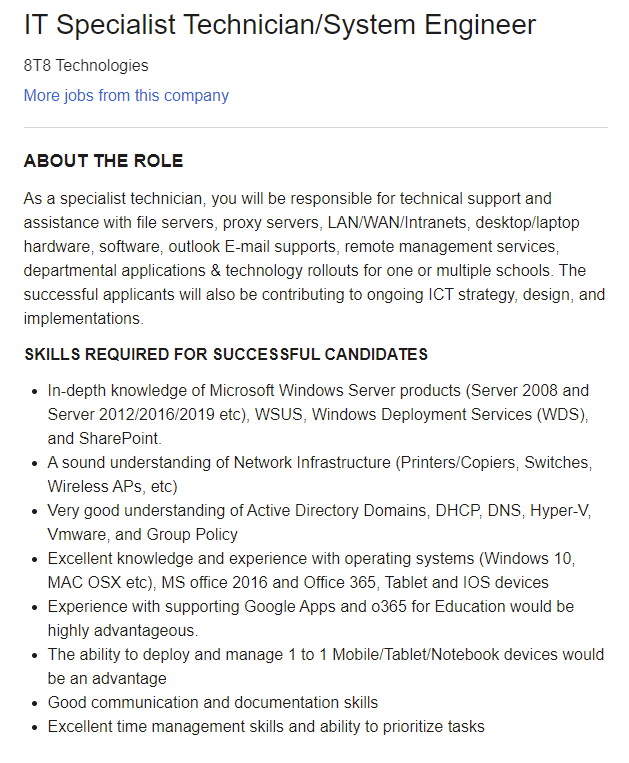
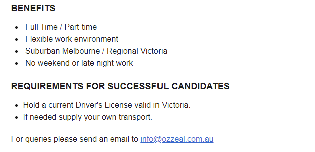
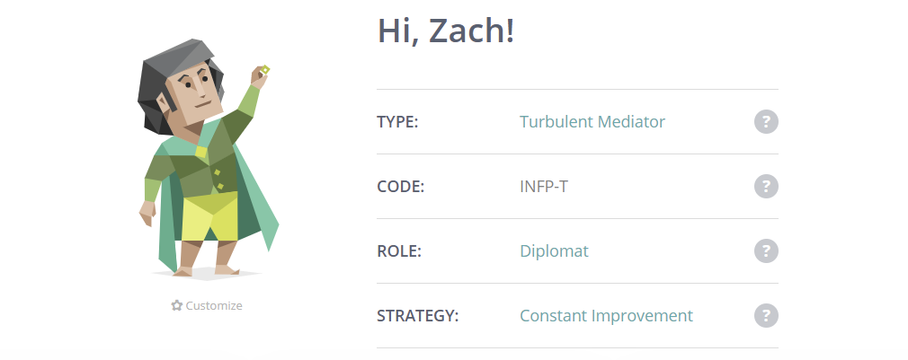
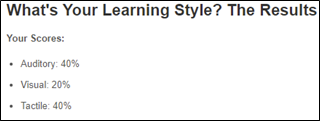
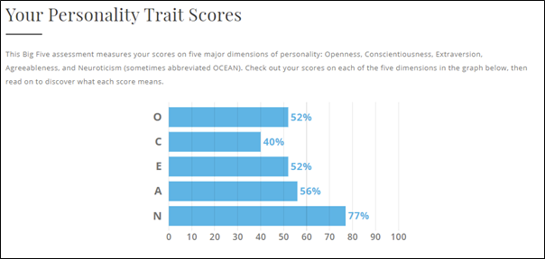

My Personal Interest in IT
Name: Zachary J Ferdinands
Student Number: 3896834
Email Address: s3896834@student.rmit.edu.au

Many people find it hard to figure out my ethnic background, so I like to call myself racially ambiguous. I am half Sri Lankan from my Dad who was born there and moved to Australia as a teenager and half Canadian from my mum who was born and raised in Australia. I attended primary school on the central coast of New South Wales and then moved back to the south-eastern suburbs of Melbourne to complete my secondary education. As well as finishing year 12 VCE, I also have a Certificate III of Information, Digital Media and Technology which I completed in year 10 and 11. One fact about myself that others may find interesting is that I play electric guitar, acoustic guitar, and electric bass, despite having relatively short and uncoordinated fingers.
My Personal Interest in IT
My interest in IT is quite broad as I haven’t reached a moment of realising which field I am passionate about, but areas that I have found interest in so far include, UX design, web design, and cybersecurity. My general interest in IT started in my primary school days, being initially drawn to computer use to play club penguin with my friends on my family’s huge windows XP machine. Over the years of playing club penguin and Minecraft, my interest in computers grew through learning how to modify game files and understand the OS before most kids learned how to use Chrome. Jumping into my year 8 computer class of learning HTML, I knew I wanted to continue studying IT learning more and more about each field.
I have chosen to come to RMIT because I have only had good experiences with it and heard positive opinions about it. Previously, my brother had studied at RMIT, also studying information technology. From our discussions together he had told me about enjoying his experience online and on-campus with his classes. As well as this, I had done research online of the best universities to study my course at. RMIT was the most well-appraised university, so I decided to set it as my first preference in year 12. Thankfully, I got into my dream course.
In my studies, I expect to learn much more about every field of IT, whether I have a particular interest in it or not. Even if I must take a class and I do not find the topic’s particularly interesting, I trust that what I learn will be useful in my future career and I keenly await to see where my learning takes me.
My Ideal Job
 This job listing is for an IT Specialist Technician/System Engineer at 8T8 Technologies located in Melbourne. The position primarily involves working with networks and systems but also includes administration and general technical support. The full list of areas covered in the job includes working with file servers, proxy servers, LAN/WAN/Intranets, desktop/laptop hardware, software, outlook E-mail supports, remote management services, departmental applications and technology rollouts for one or multiple schools. This job appeals to me specifically because of the branches of IT that it covers, including networking and technical support. Mainly, the ability to help members of a company and clients with their IT problems is what drives me to study IT as I have a passion for helping others.
In terms of more specific skills, the position requires experience and in-depth knowledge of Microsoft Windows Server products, network infrastructure, Active Directory Domains, popular operating systems and Google apps. In terms of general work skills, good communication, documentation skills, excellent time management skills and the ability to prioritise tasks are preferred.
In terms of skills, qualifications and experience related to this position, I do not have experience in many of the fields required. However, I have little experience in network infrastructure, operating systems, google apps and Microsoft Windows server products. I am hoping to gain experience and knowledge in all the other areas I lack to hopefully be able to land a job like this one day.
When it comes to gaining more experience and knowledge, I plan on focusing on my electives in the next 3 years of my bachelor’s degree. In selecting my upcoming electives, I will be seeking out those specifically related to networking, network infrastructure, servers and ICT strategy. As well as further research and optional courses, I hope through these methods that I can develop the adequate skills to become a seasoned IT Specialist and System engineer.
Personal Profiles
When it comes to my personality test, I took the Myers-Briggs Type Indicator Test on https://www.16personalities.com. I have been given the type of INFP-T (Turbulent Mediator). The website has given me this introduction on what my personality type is like:
“On the outside, Mediators (INFPs) may seem quiet or even shy. But they often have vibrant, passionate inner lives. Because they make up such a small portion of the population, people with this personality type may sometimes feel misunderstood or out of step with the world. Fortunately, their caring nature can help them create and sustain deep relationships with their loved ones.”
Secondly, I chose to take an online learning style test by answering questions about my favourite types of activities, what I remember in social situations and what type of things distract me. The website has evaluated me as an Auditory/Tactile learner, giving me 40% auditory learning preference, 40% tactile learning preference and 20% visual learning preference. Being an Auditory/Tactile learner, means I prefer to learn by hearing, listening, touching and doing.
Finally, I completed the Big Five Personality Test on truity.com.
I was evaluated using the OCEAN levels. Each letter stands for Openness, Conscientiousness, Extraversion, Agreeableness and Neuroticism. As some of those words were not known to me, here is a definition for each of them
Openness: lack of restriction; accessibility
Conscientiousness: the quality of wishing to do one's work or duty well and thoroughly.
Extraversion: the state of primarily obtaining gratification from outside oneself
Agreeableness: a personality trait manifesting itself in individual behavioural characteristics that are perceived as kind, sympathetic, cooperative, warm, and considerate.
Neuroticism: being likely than average to be moody and to experience such feelings as anxiety, worry, fear, anger, frustration, envy, jealousy, guilt, depressed mood, and loneliness.
Personality Test Evaluation
Although no formula or test will ever be able to 100% guess my inner working, I would say this evaluation is mostly accurate, describing my personality and interactions with other people well. Looking at the results, they provide a loose but accurate description that fits my behaviours and personality. Out of all 3 tests, I would choose the Myer-Briggs test as the most accurate, going in-depth into how I interact with my environments and insight into day-to-day interactions.
I think personalities and how people choose to do work can have a great impact on teamwork and one’s behaviour in a team. However, just because a certain website or quiz has evaluated two people’s personalities and labelled them as incompatible, this does not mean that anyone should limit themselves to who they work with or how they would like to work. Trying new things and work styles that may not fit your personality or learning type will only help you grow as a person.
When forming a team, I believe it would be wise to learn about each person’s personality types and learning types. This information would be the most useful in trying to understand each person and adapt to the group’s workflow and interactions to fit popular personality traits and common work styles. Doing this would increase productivity overall by making the experience of working in a team more comfortable for the members involved, increasing their performance.
Project Idea
Overview
My project idea is for a mobile app that is made to help and aid beginner to intermediate guitarists by providing an easy-to-use platform containing high-quality diagrams that show them the fretboard of the guitar and which frets (notes) to play to stay in any key they choose. The app may also have chord diagrams that will teach them how to play many different chords on the neck of the guitar, helping them to play along to any song they want. There will be an interactive diagram of the neck of the guitar and a menu that will allow the user to choose from any key they want, whether it be major, minor, or other
Motivation
When it comes to playing the guitar (or any instrument in general) 12 notes exist which are: A, A sharp, B, C, C sharp, D, D sharp, E, F, F sharp, G and G sharp. When it comes to playing a song, that song will generally have one key that the musician must play in; 7 out of the 12 notes that fit with the song to make it sound “in key”. The problem for guitarists is that there are 126 places on a guitar to play all 12 notes. This makes it hard for beginner and even intermediate guitarists to memorise every note on the guitar and which notes are in which key. With guitar sales peaking in 2020 and millions of new guitar players coming out of the woodworks, there is no greater time to develop such a useful app, especially for newer guitar players.
Description
The app’s design will be centred around a guitar fretboard diagram, designed for the user to be holding their phone in landscape mode. When opening the app, the fretboard will be blank, and a menu will pop up asking the user to enter which key they would like to select. The menu will provide the user to pick a note from A to G sharp, and then specify which type of key they would like. There will be options for major, minor, blues, minor pentatonic and major pentatonic.
Once the user has selected which key/scale they would like to have displayed on the fretboard, the notes that fit into that key will appear on the fretboard. For each note/fret that fits in the key, there will be a circle on top of it with the note of that fret displayed as well.
Due to the scale of the guitar fretboard and the aspect ratio of most phones being incompatible to display the full fretboard, the diagram will start from the 1st fret to the 7th, then giving the user the ability to scroll across the rest of the fretboard horizontally, up to the 21st fret.
Also, there may be some options that will allow the user to alter their experience and what they see on the fretboard. One option could allow the user to toggle if they would like to see the notes on the fretboard or just circles where they need to press their fingers. Another possible option could allow the user to change the colour of the root note of each key, e.g making the A notes for A major appear differently than the rest of the notes. One final option that could be included is the ability for users to see the notes of each key labelled as 1, 2, 3, 4, 5, 6, and 7 instead of their actual notes (e.g C, D, E, F, G, A and B).
To increase the ease of use and make the app more convenient for the user, there may be a “recently selected’ menu where the user can see which specific keys they have previously used in the app and jump back into where they were, getting rid of the need for the user to have to reselect their key every time they restarted the app.
Another problem that may arise with the scale of a guitar fretboard is the possibility that menu options may not be able to fit on the same screen as the guitar fretboard diagrams. This problem could be solved with the use of dynamic pop up menus that can appear when the user needs them and then be hidden allowing the user to maximise their phone screen for just seeing the fretboard.
Tools and Technologies
Through my research, I have discovered that developing ios apps is the easiest on Macs, but, it can still be done on windows through virtual machines and other software solutions. The main problem that makes iOS app development hard for Windows machines is the Xcode, the Integrated Developer Environment that is used to design iOS apps. Xcode is only compatible with Mac OS X.
An easy workaround for this is to run Mac OS X through a virtual machine such as VirtualBox and then develop my application through there.
A possible issue that could get in the way of ethical and legal guidelines is Apple’s End User Licence Agreement that states using Mac OS on other hardware is against the agreement. A possible solution for this issue is to rent or buy a second-hand Macbook, which would also make development easier overall.
Once a Mac or Mac OS X software has been acquired, the best tool to develop the app would be Xcode, a free platform made by Apple used to develop apps for any apple product using the Swift programming language.
Skills Required
Learning how to write in the Swift coding language on Xcode requires a significant amount of time and effort, as it is an entirely different programming language that I am completely unfamiliar with. However, it has been compared to Python (which I am more familiar with) as a similar language online.
Overall, it would most likely take a few months to become competent with using Xcode. This could be a problem depending on how long the expected development cycle of the app would be.
More difficulties could also come with having to acquire a Mac computer and learn how to use the OS as well, as I have been a Windows user all my life.
Acquiring the hardware and software would be the easiest part of the development process, with learning the skills required for Xcode would be the most time consuming and difficult.
Outcome
If the project is successful, I am hoping that the app will be of great use to many new and intermediate guitar players all over the world. I am aiming to solve the issue that many guitar players have of learning the fretboard of the guitar and which notes are in each key/scale.
Although this app will not simply grant anyone the ability to instantly learn all the prior mentioned skills in one day, I hope it will act as an incredibly useful aid in developing those skills for the users of the app to put to use in their playing.
No, this app won't change guitar playing forever or make it so that learning guitar is marginally easier in comparison, but this development will hopefully greatly benefit those guitar players who have started learning and are keen to learn the essential skill of mastering the guitar fretboard.